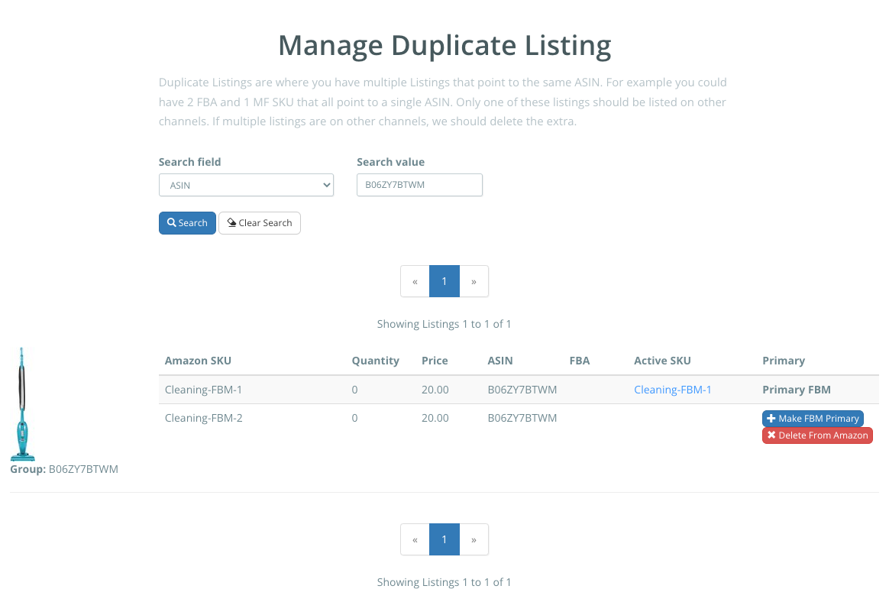

Duplicate Amazon listings are defined as two or more SKUs assigned to the same ASIN. Amazon allows sellers to sell a merchant fulfilled (MF), and fulfilled by Amazon (FBA), which differ in SKU, but share an ASIN. While this may be the most common situation, it's possible to have any number of SKUs assigned to one ASIN.
Listing Mirror is built on the concept that each product is assigned one Listing Mirror SKU, regardless of how many Market SKUs that product may have. This is done to make sure your inventory is tracked properly, and nothing over or undersells.
Clicking Delete From Amazon will permanently delete the listing on Amazon, regardless of your integration settings.
You can use the search feature to search by SKU, ASIN, or Title.
When you have a duplicate SKU, we'll only display the first imported SKU on the Manage Listings page. If you need to change which SKU is shown, delete the Amazon market listing on the Manage Listings page, then, wait for it to import.
If you have two or more MF SKUs assigned to the same ASIN, we'll make the first imported SKU the primary. This can be changed on the Manage Duplicate Listings page by clicking Make FBM Primary. Your primary SKU will be the product we send quantity to, while the non-primary SKUs will be handled based on your Amazon integration settings.
In the Advanced tab for your Amazon integration settings, you'll find your strategy options.
We won't change the quantity for the non-primary FBM SKU. The SKUs won't share quantity, which can lead to overselling. Only use this option if your intent is to have the quantity be different between the SKUs. You'll need to manage the non-primary FBM SKU quantity on your Amazon seller account.
We will only sync quantity to the primary FBM SKU, not both. This is to prevent overselling. Any non-primary FBM SKUs will be set to zero quantity.
We will take the quantity from the primary FBM SKU, and send it to the non-primary FBM SKUs.
If you have duplicate FBA SKUs, your quantity will be displayed as the sum of all duplicates. When filling orders, we'll fill them from lowest to highest quantity based on the SKU. If a SKU had 5 quantity, and another has 10, we'll pull from the SKU with 5 until it sold out.